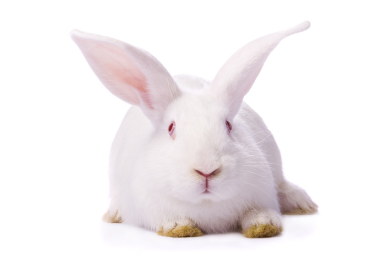

Походження
Порода кролів спеціалізованого м’ясного напряму продуктивності. Виведена в 1910 р. в США в результаті відбору тварин – альбіносів серед кролів породи новозеландська червона. При розведенні тварин бажаного типу «в собі» вели їх відбір і підбір по швидкостиглості в ранньому віці, хорошою вираженістю м’ясних форм, забійному виходу і смаковим якостям м’яса. Згодом вдавалися до вводного схрещування «в собі» тварин, які розводилися, з кроликами породи фландр з метою підвищення живої маси нащадків та усунення деякої перерозвиненості їх конституції (ніжна статура, тонкий кістяк). Порода має два типи: Білий та червоний.Червона новозеландська порода виведена шляхом схрещування фламандського велетня і кролів породи бельгійський заєць.
Особистість
Новозеландська порода
Назва породи Новозеландська (New Zealand) Тип твариниКролі НапрямокХутрові - м’ясні Компанії племрепродукториТОВ «Український племінний кролівницький комплекс»
Історія
Порода кролів спеціалізованого м’ясного напряму продуктивності. Виведена в 1910 р. в США в результаті відбору тварин – альбіносів серед кролів породи новозеландська червона. При розведенні тварин бажаного типу «в собі» вели їх відбір і підбір по швидкостиглості в ранньому віці, хорошою вираженістю м’ясних форм, забійному виходу і смаковим якостям м’яса. Згодом вдавалися до вводного схрещування «в собі» тварин, які розводилися, з кроликами породи фландр з метою підвищення живої маси нащадків та усунення деякої перерозвиненості їх конституції (ніжна статура, тонкий кістяк). Порода має два типи: Білий та червоний.Червона новозеландська порода виведена шляхом схрещування фламандського велетня і кролів породи бельгійський заєць.
Стандарт породи
Конституція кролів новозеландської білої породи міцна, кістяк досить добре розвинений. Тварини відрізняються коротким циліндричним збитим тулубом, відмінною м’ясністю і високою енергією росту в ранньому віці. Згідно з породним стандартом тулуб у кроликів цієї породи короткий, пропорційний, компактний (довжина тулуба самців 47 см, кролиць – 49,5 см, жива маса – відповідно 4,5 та 5 кг), ребра округлі, з добре розвиненими вздовж них і хребта м’язами, груди глибокі, широкі, спина пряма, широка й коротка, з дуже широкою попереково-крижовою частиною, кінцівки міцні, прямі, з добре розвиненими на них м’язами. Досить тверді та щільні м’язи без зайвих жирових відкладень добре розвинені по всьому тулубу. Волосяний покрив у новозеландських кролів щільний, густий, білого кольору, з тонким підпушником.
Новозеландська червона. Шкурка на кроликів цієї породи має яскраво виражений грубуватий рудувато-червоний, іноді рудий колір і не представляють великої цінності в хутряному відношенні.
Здоров'я
Кролики живуть 5-8 років
Грумінг
Повновікові кролики цієї породи важать від 4 до 5 кг. Молодняк відрізняється високою енергією росту в ранньому віці. В 2-місячному віці він досягає живої маси 1,8–2 кг, у 3-місячному — 2,7–3 кг. Кормів на 1 кг приросту живої маси витрачається від 3 до 5 кг кормових одиниць. Забійний вихід — 52–58 %. Кролиці досить плідні, відрізняються гарною молочністю, вирощують до відсадження 7–12 кроленят. Новозеландські білі кролики відрізняються спокійною вдачею, високою оброслістю лап волосяним покривом і гарною пристосованістю до умов розведення на сітчастих підлогах у механізованих крільчатниках з регульованим мікрокліматом; досить вимогливі до умов годівлі. Вони добре поєднуються при схрещуванні з кроликами інших порід, при цьому в помісей найчастіше виявляється ефект гетерозису. Добре зарекомендували себе варіанти схрещування цих тварин з кроликами порід радянська шиншила, чорно-бурий, білий велетень, віденський голубий.